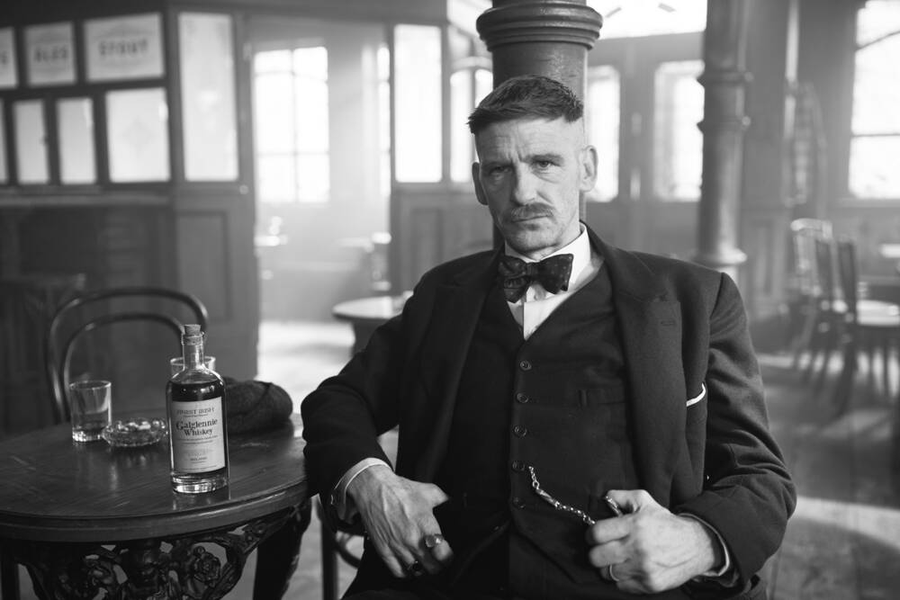

Arthur Shelby

Arthur Shelby Jr. is one of the main protagonists of the Peaky Blinders. He is the eldest son of Arthur and Mrs Shelby, older brother of Thomas, John, Ada and Finn Shelby.
Arthur served alongside his brothers Thomas and John during World War I; his experiences during it caused him to suffer constant fits of rage upon returning home, making him a dangerous member of the Peaky Blinders.
During the rise to power of the Peaky Blinders, Arthur acted as second-in-command to his brother Thomas, while the latter dealt with rival gangs, such as the Birmingham Boys, led by Billy Kimber, or the Italian mafia of London headed by Darby Sabini; all of this made to Arthur becoming vice-president of Shelby Company Limited, which he and his two brothers founded, and a member of the ICA, although it also caused Arthur to develop drug addiction problems which worsened until he met a woman named Linda, whom he married, and had a son named Billy.